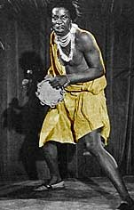

Не опровергнуто, что в конце войны юный Джей, приписав себе два года возраста, успел повоевать в рядах Военно-воздушных сил США. В рядах культупросветбригады он побывал в Великобритании и Японии. В зависимости от настроения, Джей говорил, что с тот период получил первые уроки то ли профессионального пения, то ли игры на саксофоне.  ХОКИНС: Я играл на саксофоне и подхватывал на фортепиано. Я выдувал джаз. Он попробовал свои силы и на боксерском ринге: в 1947.г выиграл любительский чемпионат "Золотая перчатка", а в 1949г. стал "Чемпионом Аляски в среднем весе". К сожалению (или к счастью) вскоре на Аляске появился еще один боксер. По одному описанию м-р Хокинс покинул профессиональный ринг, отказавшись даже от попытки защищать свое звание. По другому, он выстоял 15 трудных раундов, но вместо титула и приза получил извещение, что он не может быть чемпионом среди любителей, поскольку является военнослужащим. Спустя некоторое время его отправляют служить дяде Сэму, который в тот раз наводил на свой излюбленный манер порядок в Корее. Трудясь на торжество американского правопорядка в Корее, рядовой Хокинс получил ранение от взрыва ручной гранаты. ХОКИНС: 13 боевых операций! Я побывал на двух войнах и едва остался жив. На моем теле больше меток, чем в любом среднестатистическом кроссворде: это следы ножей, бомб, гранат и пуль. Когда я был в лагере военнопленных, меня почти пополам разрезал японский генерал. Без всех этих полуправд-полуврак не было бы хокинс-рок-н-ролла. Про Мерилин Мэнсона точно известно, что он - неудачливый разносчик пиццы. А Хокинс - это человек ниоткуда, его воспитали таким непосредственным приемные родители: индейцы-черноноги. Искусству бельканто (а у Хокинса - хорошо поставлен голос) он учился тоже у знойного персонажа. ХОКИНС: Я не умел так хорошо петь, пока не съездил в местечко под названием Нитро, в Северной Каролине. Был 1950 год. Там была такая большая… большущая… огромная толстая дама… Вы не сдерживайте воображение, когда думаете, что я называю "толстой": обжора, чудище невиданное. Рядом с этой женщиной среднестатистический слон показался бы худым, как карандашик, вот какой она была жирной. И она была такой счастливой и веселой! Она заливалась одновременно виски "Блэк энд Уайт" и "Джеком Даниэлсом", и все поглядывала на меня… И говорила: "Вопи громче, малыш. Вопи, Джей!" И я сказал себе: "Джей, тебе нужно было сценическое имя? Вот оно!" Так появился "Вопящий" Джей Хокинс! Уже звучало не плохо, но еще требовало раскрутки! В 1951 году он встретил компанию, подходящую ему по темпераменту. В одном из баров, где он и сам увеселял публику, он встретил Тини Грайнса. Тот играл на четырехструнной (не-бас!) гитаре и возглавлял группу под названием "Rockin' Highlanders" - "Отвязные горцы" (в приблизительном переводе). Это были чернокожие музыканты, выступавшие в шотландских килтах и высоких шапках! "Отвязные горцы" не могли не очаровать "Вопящего", но безвестного пока Джея Хокинса. ХОКИНС: Я подошел в Тини и попросился на работу. Меня взяли в качестве его слуги, телохранителя, выгуливателя собаки, пианиста и блюзового певца - по 30 долларов в неделю за все. Я выходил на сцену в шотландском килте, и на груди у меня болтались две жестянки из-под молока - как титьки. Я пел: "Мама, твою дочь обижают" ('Mama He Treats Your Daughter Mean', блюзовый хит на мелодию Elmore James, с текстом на дамский манер.). |